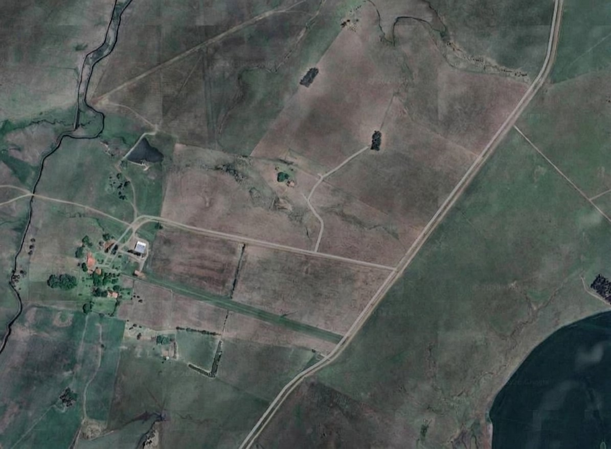

Monitoramento da Produção
Acompanhamento dos Produtos em Desenvolvimento Nos Talhões.
Visão dos Talhões
Selecione um Talhão Para Visualizar seus Dados.

Outros talhões
Talhão selecionado
Em Monitoramento
Detalhes: Talhão A1
Área
10 hectares
Tipo de Solo
Arenoso
Data de Plantio
15/03/2026
Previsão de Colheita
20/10/2026
Variedade Cultivada
Uva Isabel
Informações do Talhão-Diário
| Temperatura | Umidade Ar | Umidade Solo | Chuva |
|---|
Informações do Talhão-mensal
| Temperatura | Umidade Ar | Umidade Solo | Choveu | Previsão Colheita | Qtd. Colhida |
|---|---|---|---|---|---|
| Carregando dados dos sensores... | |||||
Histórico de Colheitas
Acompanhe a evolução da produção ao longo dos anos.
ÚLTIMA COLHEITA
Média: -- t/dia
--/----
-- Toneladas
MENOR COLHEITA
Média: -- t/dia
--/----
-- Toneladas
MAIOR COLHEITA
Média: -- t/dia
--/----
-- Toneladas